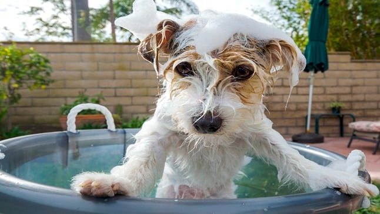

¿Cada cuánto tiempo debo bañar a mi perro?
Todos sabemos que debemos lavar a nuestro perro de vez en cuando para mantenerlo limpio y libre de parásitos, pero lo que muchas veces desconocemos es cada cuanto se debe bañar a un perro, algo que varia en función de su tipo de pelo y características.
Desde AmorIncondicional te vamos a explicar qué factores debes tener en cuenta para saber cada cuanto tiempo puedes o debes lavar a tu perrito, ya sea adulto o un cachorro. Recuerda que cada perro es diferente, así que simplemente aplica estos consejos.
Cuando lavar a un perro dependiendo del tipo de pelo que tenga
Aunque obviamente existen muchos otros factores que nos indicarán cuando debemos bañar a nuestro perro, cómo la suciedad o el olor, a niveles generales podemos indicar que dependiendo también del tipo de pelo que tenga será necesario bañarlo con mayor o menor frecuencia.
Los perros de pelo largo y abundante tienen a mancharse mucho más que los perros de pelo corto y poco espeso, sencillamente porque la suciedad se adhiere mejor y cuesta más que se desprenda.
El simple polvo que pueden coger cuando están corriendo mientras juegan por parques y caminos, se elimina de forma natural mucho más fácil en perros con poco pelo que en perros con una gran cantidad de pelo.
Recuerda que el cepillado diario, funciona como un baño en seco, además de eliminar las suciedades, estimula la circulación sanguínea el crecimiento del pelo, elimina las células muertas de la piel de tu mascota, al tiempo que distribuye los ácidos grasos de la piel, en el pelo y lo hace ver más brilloso y protegido.
- Perros de pelo corto / poco abundante: Una vez cada dos meses aproximadamente
- Perros con pelo largo y abundante: Una vez por mes
- Perros con pelo de tamaño medio: Una vez cada mes y medio
Otros factores que afectan el tiempo de baño en perros
Independientemente de la cantidad de pelo que tenga nuestro perro, debemos fijarnos en sus hábitos diarios. Un perro que vive en un pueblo donde está en constante contacto con otros animales y tierra de los caminos, se ensuciará con mucha más frecuencia que un perro de ciudad.
Ten presente que las glándulas de la piel secretan a la superficie inmunoglobulinas y otras sustancias que neutralizan a las bacterias resistentes, evitando el desarrollo de piodermas (infecciones con pus), por eso el baño…justo el imprescindible.
También debemos valorar el comportamiento de nuestro perro, si es un poco cochinote y se restriega en el suelo cuando percibe un mal olor (en ocasiones incluso sobre caca) obviamente debemos bañarlo con más frecuencia.
El clima también es un factor clave, ya que en lugares donde llueve mucho nuestro perro se mojará con más frecuencia, algo que derivará tarde o temprano en mal olor corporal. En estas situaciones también se debe bañar al perro con mayor frecuencia.
Incluso la alimentación es un factor que influye mucho en el aseo de nuestro perros, los perros alimentados con productos naturales cómo la Alimentación BARF para perros, desprenden mucho menos olor corporal que los perros alimentados con croquetas comerciales (pienso/balanceado).
Cuando bañar a un cachorro por primera vez
Lo primero que debemos comprender es que un cachorro es un animal extremadamente sensible, un simple resfriado puede terminar con su vida. Por eso es muy importante no bañar a un cachorro hasta que tenga puestas todas sus vacunas, es decir, hasta que tenga como mínimo tres meses de vida.
Los líquidos que recubren al cachorro en su vida fetal, unido a la saliva de la madre (al lamerlos continuamente en el postparto) crean una barrera protectora contra gérmenes oportunistas, por lo que no debemos tener prisas en bañar a nuestro cachorro.
Cuando lo bañemos debemos prestar atención para que no lama el jabón, además debemos vigilar mucho la temperatura del agua y secarle a conciencia cuando terminemos. Evitando que haya corrientes de aire que puedan afectarle.
Bañar a un cachorro por primera vez es casi cómo una operación de alto riesgo, donde debemos tener mucho cuidado. Una vez que hayan cumplido los tres meses, lo recomendable es intentar bañarlos lo menos posible hasta que tengan al menos seis meses.
De esta forma reduciremos riesgos, aunque obviamente si se mancha mucho… es algo inevitable. No te pierdas la información completa en:
Cuando bañar a perros con problemas de piel o salud
Los perros enfermos requieren de otro calendario de baños, ya que será el veterinario quien nos indique cuando podemos bañarlo y con que frecuencia. A niveles generales deberemos usar un champú especial para perros, ya que su ph es muy diferente al nuestro.
En el caso de las dermatitis el baño constituye un aliado para el veterinario, pues a través de él podemos suministrarle a la piel hidratantes y estabilizantes de pH, antisépticos, antiparasitarios entre otros.
Generalmente el periodo entre un baño y otro se acorta según superación veterinaria y la evaluación previa de las lesiones en cuestión. Los perros con problemas de piel cómo ácaros o enfermedades cutáneas deben usar siempre un jabón especial para tratar su enfermedad, será el veterinario quien te lo suministre.
Los perritos más ancianos deben tener un ciclo de baño menor, ya que al igual que los cachorros, son perros sensibles que pueden resfriarse con mucha facilidad. Lo recomendable es bañarlo en casa, ya que así podremos secarle bien y sin prisas.
Presta una especial atención a las orejas de tu mascota a la hora del baño, el agua en los oídos puede provocar otitis. Si vas a limpiar esa zona, que sea lo más externo posible (la oreja), el resto se lo puedes dejar a tu veterinario.